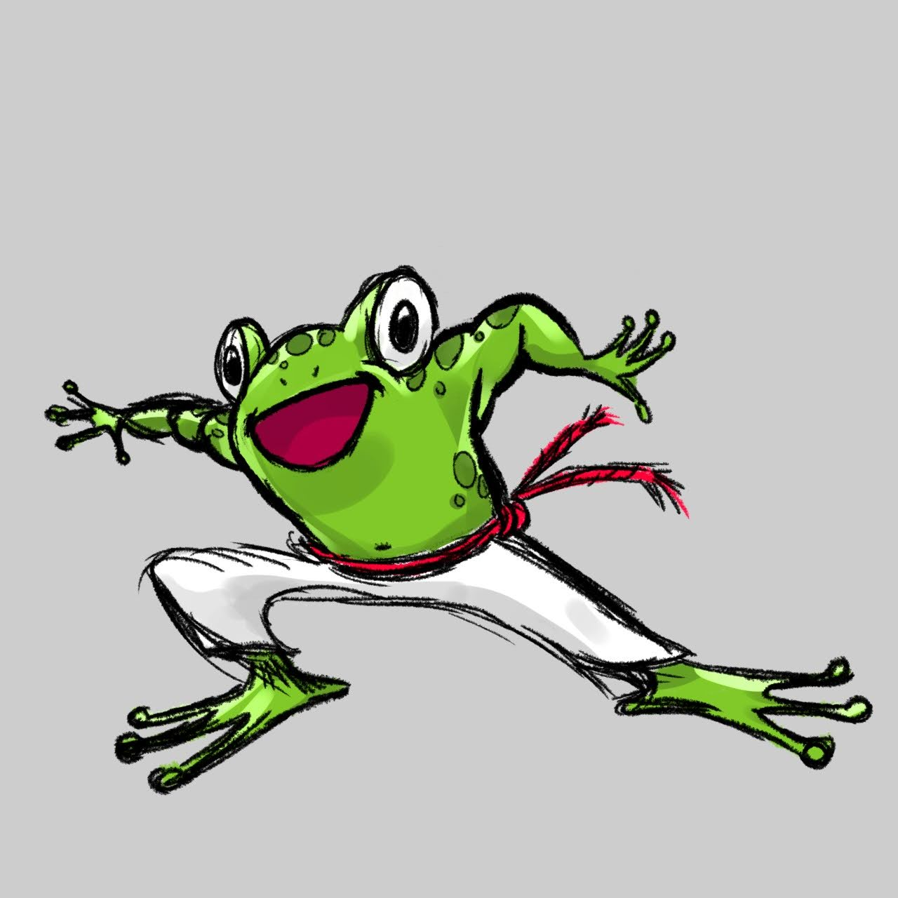

Através dessas brincadeiras presentes no ensino da Capoeira para crianças, se favorece a coordenação motora, o campo visual, a criatividade, autoestima, automatização de movimentos e educa as crianças na administração do tempo e espaço dentro de um movimento. O resultado é uma criança mais desinibida e com mais segurança.
No que se refere aos aspectos físicos, esse esporte oferece às crianças:
- Resistência aeróbica e anaeróbica.
- Flexibilidade.
- Aumento de dos reflexos.
- Força e agilidade.
- Equilíbrio, coordenação e ritmo.
- Tempo de reação simples e complexo


No que se refere aos aspectos psicológicos, a capoeira desperta e estimula algumas qualidades das crianças:
- A atenção e percepção.
- A criatividade.
- A disciplina e o respeito.
- Segurança em si mesma.
- O autocontrole e astúcia.
- A cooperação e o sentido de sociedade.
MUSICALIDADE
musicalidade na capoeira tem papel fundamental, pois dela se desencadeia boa parte do processo ritualístico da capoeira, ou seja, é a partir da musicalidade que os movimentos são executados, os instrumentos são tocados e as cantigas entoadas.
A música na capoeira desenvolve a motricidade e a perceção sensorial (contribuindo para algumas aquisições, tais como: Linguagem, leitura, escrita e lógica-matemática).